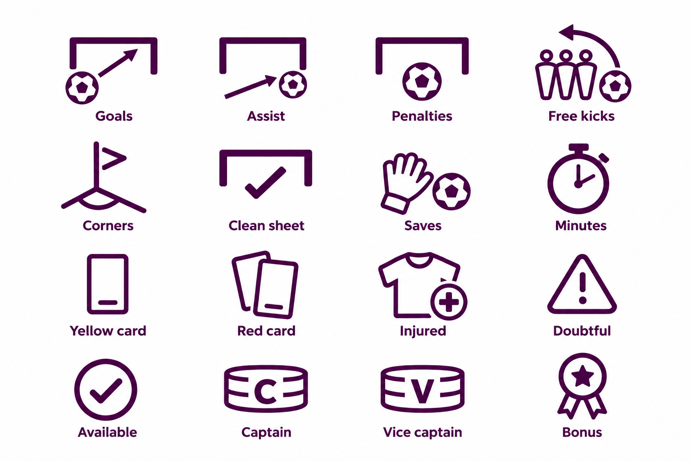
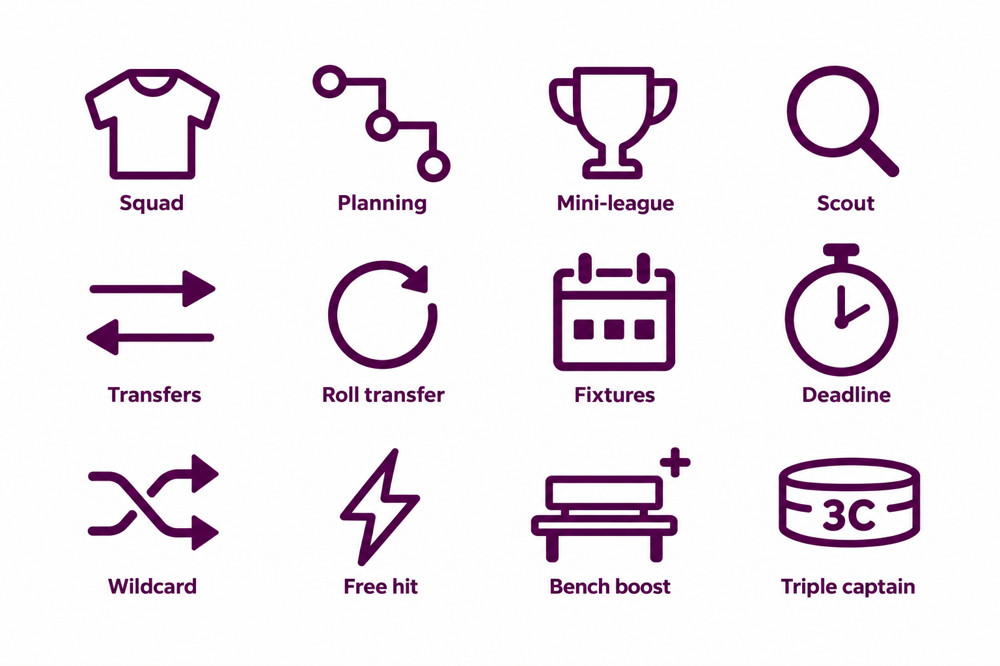
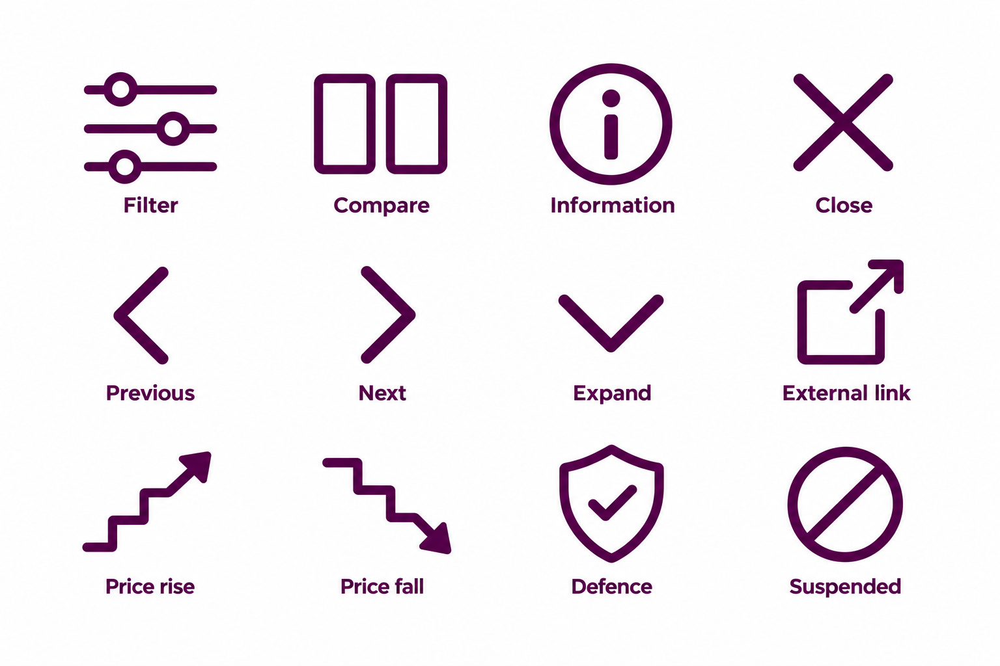
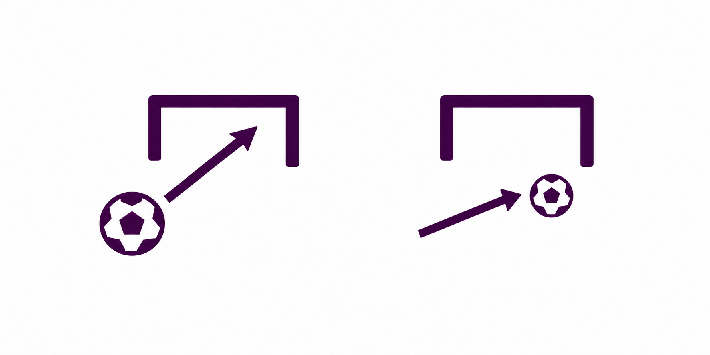

FPL Insights — icon concept suite
40 proposals. Raster references; final SVG geometry and small-size checks remain outstanding. Read handoff notes.
Football

Navigation and planning

Controls

Approved Goals / Assist composition reference
